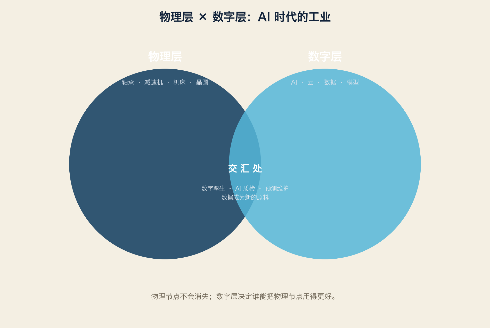

4.1 一句话
AI 改变的是我们使用物理世界的方式，不是物理世界本身。
4.2 物理层：不会消失的节点
轴承：所有旋转的地方都需要
减速机：所有重负载都需要
机床：所有精密零件都需要
晶圆厂：所有芯片都需要
传感器：所有数据都需要从物理世界采集
没有物理层，数字层只是“没有身体的灵魂”。
4.3 数字层：正在重写的部分
设计：AI 生成结构、仿真、优化
生产：AI 排产、质检、维护
物流：AI 路径、仓储、预测
管理：数字孪生、MES/ERP 智能化
4.4 交汇处：谁掌握“数据回流”
物理层和数字层交汇的地方，产生最稀缺的能力：把车间数据变成模型、再把模型变回动作。
数据回流三件套：
1. 传感器（采集）
2. 边缘盒子（处理）
3. 工业软件（决策）
拥有这三件套的企业：
西门子：PLC + 工业软件 + 数据平台
SICK：传感器 + 数据分析
汇川：伺服 + 控制器 + AI
海康：相机 + 视觉模型 + 移动机器人
华为：通信 + 算力 + 行业方案
4.5 两个世界的价值
| 物理层 | 数字层 | |
|---|---|---|
| 代表 | 轴承、减速机、晶圆、机床 | 模型、数据、软件 |
| 折旧 | 慢（20–50 年） | 快（2–5 年） |
| 护城河 | 工艺、设备、材料 | 数据、人才、生态 |
| 风险 | 技术路线被颠覆 | 模型被开源、被超越 |
| 未来 | 少而精 | 大而快 |
4.6 给企业的一句话
不要问“要不要 AI”。
要问：“我的物理节点是什么？我的数据从哪里来？
AI 能不能让我把物理节点用得更好？”
词汇笔记（Vokabelnotiz）
| 中文 | Deutsch | English |
|---|---|---|
| 物理层 | physische Ebene | Physical layer |
| 数字层 | digitale Ebene | Digital layer |
| 数字孪生 | digitaler Zwilling | Digital twin |
| 数据回流 | Datenrückfluss | Data feedback loop |